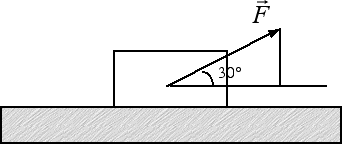

Forza d'attrito
Esercizi
Quesito: Si consideri una forza di intensità F = 18 N, inclinata di 30° rispetto all'orizzontale e applicata a un corpo di peso FP = 10 N. Si stabilisca se la forza è in grado di mettere in moto il corpo sapendo che il coefficiente d'attrito statico è uguale a 0.4.

Risposta: Si tratta per prima cosa di scomporre la forza nelle due componenti orizzontale Fx e verticale Fy. Il triangolo in figura è la metà di un triangolo equilatero di lato F = 18 N. Pertanto la sua componente verticale è Fy = F / 2 = 9 N. La componente orizzontale della forza-peso è invece uguale a Fx = 0.866 · F = 0.866 · 18 N = 15.6 N. Per scoprire se il corpo si muove o meno dobbiamo analizzare le forze in gioco nelle due direzioni indipendenti: quella orizzontale e quella verticale. Lungo la direzione verticale la forza peso FP è maggiore della componente Fy, pertanto la forza applicata non è sufficiente a sollevare il corpo e la reazione vincolare del piano mantiene il corpo in equilibrio lungo la direzione verticale. Per scoprire se il corpo si muove lungo la direzione orizzontale dobbiamo prima di tutto calcolare la forza d'attrito statico. In questo caso contribuisce alla forza d'attrito sia la forza peso FP = 10 N sia la componente verticale Fy = 9 N della forza. Avremo che l'intensità della forza d'attrito statico è Fs = μs · (FP - Fy) = 0.4 · 1 N = 0.4 N. Siccome la componente orizzontale della forza applicata Fx = 15.6 N è maggiore rispetto alla forza d'attrito Fs = 0.4 N possiamo dire che la forza applicata è sufficiente a mettere in movimento il corpo lungo la direzione orizzontale.
Quesito: Per mettere in movimento un parallelepipedo di massa 3 kg posto su un piano orizzontale è necessario applicare una forza pari a 13 N. Sopra il parallelepipedo viene posto un ulteriore carico di 15 N. Qual è la forza che dobbiamo applicare per mettere in movimento il corpo? Il risultato cambia se appoggiamo il parallelepipedo sulla sua faccia di area minore?
Risposta: Per prima cosa a una massa m = 3 kg corrisponde una forza-peso pari a FP = 29.4 N. La forza di primo distacco F = 13 N coincide con la forza di attrito massima Fs = μs · FP. Pertanto possiamo ricavarci facilmente il coefficiente di attrito statico μs = Fs / FP = 13 N / 29.4 N = 0.44. Quando aggiungiamo il carico di 15 N il peso totale diventa FP = (29.4 + 15) N = 44.4 N. Di conseguenza la forza di primo distacco diventa Fs = μs · FP = 0.44 · 44.4 N = 20 N.
A questo risultato potevamo arrivare senza passare attraverso il valore del coefficiente di attrito statico. Infatti la forza d'attrito massima e la forza di primo distacco sono direttamente proporzionali alla forza-peso. Pertanto se a un peso di 29.4 N corrisponde una forza di primo distacco pari a 15 N a una forza-peso di 44.4 N corrisponderà una forza di primo distacco x data dalla soluzione della proporzione 29.4 N : 13 N = 44.4 N : x. Ricordando che in una proporzione il prodotto dei medi è uguale al prodotto degli estremi riotteniamo per x il seguente risultato
x = 44.4 · 13 / 29.4 N = 20 N.
Infine notiamo come nella forza d'attrito massima, e di conseguenza anche nella forza di primo distacco, non compare alcun riferimento all'area della superficie di appoggio del corpo. La forza d'attrito dipende unicamente dal peso dell'oggetto. Pertanto è del tutto ininfluente su quale faccia appoggiamo il parallelepipedo: la forza-peso rimane la stessa e anche la forza di primo distacco non cambia. Provare (con un dinamometro) per credere!